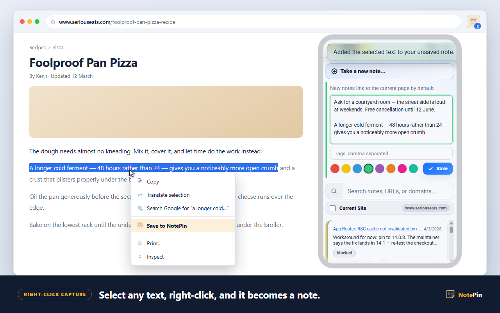
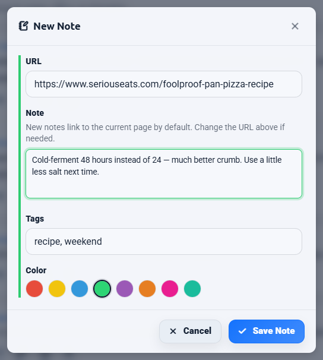

The basics
The three-second capture
Three steps, no clipboard, no second window.

Select
- Highlight any text on any website.
- A sentence, a paragraph, a code block — whatever you want to keep.
Right-click
- Choose Save to NotePin.
- The note opens with your selection already filled in.
Save
- Trim it, add a thought, pick a colour.
- Press Save — or Ctrl + Enter.
What you have afterwards is not a loose fragment of text. It is the text, the address of the page it came from, that page's title, the date, and whatever colour or tags you gave it — all of which are searchable.
Reference
Every way to capture
Selected text is the most common route, but it is not the only one. Each method differs in what ends up in the note and which address gets attached.
| Method | Note text | Address attached |
|---|---|---|
| Right-click on selected text | The selected text | The page you are on |
| Right-click on a page | Empty, you type it | The page you are on |
| Right-click on a link | Empty, you type it | The link's address |
| Keyboard command | The selected text, if any | The page you are on |
| Popup → Take a new note… | Empty, you type it | The page you are on |
| Board → New Note | Empty, you type it | Whatever you type in the URL field |
The third row is worth noticing. Right-clicking a link rather than the page saves a note against the destination, not against where you are standing. That is how you leave yourself a note about an article you have not read yet.
Assigning a keyboard shortcut
Three commands can be bound to keys of your choice. None are assigned out of the box, so nothing you already use gets taken over.
- Open
chrome://extensions/shortcuts— on Edge,edge://extensions/shortcuts. - Find NotePin in the list.
- Click the pencil beside Save the selected text to NotePin and press your combination.
The idea
Why the address matters more than the text
A saved quote with no source is a rumour you told yourself.
Anyone who has kept a scratch file of interesting paragraphs knows how it ends. Six months later there are forty fragments and no way to tell which came from a standards document and which came from a forum reply by someone guessing. The text survived; the thing that made it worth trusting did not.
Attaching the address at capture time is the whole trick, and it only works if it costs nothing. If keeping the source means an extra deliberate step, it gets skipped exactly when you are moving fast — which is exactly when you are collecting the most.

NotePin also stores the page's title, up to 80 characters, and shows that instead of the raw URL on the note card. A list of saved quotes then reads like a list of sources rather than a column of near-identical addresses. Hover the link to see the full address; it is still there, and it is still searchable.
Behaviour
Nothing saves until you say so
A capture never writes straight to storage. It opens the note with your selection already in it and waits.
This matters more than it sounds. Web selections are messy — you catch a stray heading, a "Share this" caption, a footnote marker. Being able to clean that up in the same motion as saving is the difference between a collection you will reread and one you will not.
Notes hold up to 2,000 characters, and a counter appears once you pass 1,000 so you know you are approaching the ceiling. Line breaks are preserved, so a captured list stays a list.

Behaviour
Drafts are never overwritten
If you start writing in the popup and it closes — you clicked the page, switched tabs, the browser took the focus away — the text is kept. Open NotePin again and it is still there.
The part that is easy to get wrong, and that NotePin gets right: if you then capture something else with a right-click, the new capture is added underneath your unsaved draft rather than replacing it, and a short message confirms it. You can collect three quotes in a row into one note without losing the first two.
Limits
Pages that cannot carry an address
Not every page is a web page, and the ones that are not cannot be attached to a note.
chrome:// and
edge://, extension pages, and local file:// pages are not valid web
addresses for a note. You can still write the note; it is saved without an address and appears
under No Domain on the board.
Only http and https addresses are stored. If you type a bare address
by hand, https:// is added for you before it is checked.
Honest scope
Saving vs highlighting: what this is and is not
If you searched for a web highlighter, read this bit before installing anything.
A highlighter extension paints colour onto the page itself and tries to restore that colour the next time you visit, by remembering the position of the text in the document. A capture tool takes a copy of the text out of the page and stores it somewhere of its own. They look similar in a screenshot and behave very differently in practice.
| Behaviour | Highlighter | NotePin |
|---|---|---|
| Marks the original page | Yes | No |
| Survives the page being rewritten | Often not | Yes — you hold a copy |
| Works if the page is deleted | No | Yes |
| Your own words alongside the quote | Sometimes | Yes, same field |
| Shows on the page when you return | Yes | Optional — see sticky notes |
| One searchable list of everything kept | Varies | Yes |
NotePin can do the on-page part too, but as a separate opt-in feature rather than the core model: in-page sticky notes show your saved notes for a site floating on that site. That feature is off by default and is the only one that asks for access to website content.
Organising
Colours and tags for triage
Capture is fast, so you will capture a lot. The sorting problem arrives next. Two cheap tools handle most of it.
Eight colours — red, yellow, blue, green, purple, orange, pink, and teal — appear as a stripe down the edge of each card and as a filter on the board. Colours cost nothing to store. Because "purple means read later" is impossible to remember six weeks on, you can name each colour in Settings → Color labels; those names then appear on the swatches, in the board's filters, and in the bulk colour picker.
Tags — up to five per note, 24 characters each — are the better choice when
the thing you are grouping spans many different sites. Type them comma-separated in the note
form. Clicking a tag chip later fills the search box with tag:name, which you can
also just type.
Answers
Common questions
How do I save text from a website?
Select the text you want, right-click it, and choose Save to NotePin. The selected text is filled in as the note and the address of the page you are on is attached automatically. Review or trim it, then press Save. Nothing is stored until you do.
How do I save selected text in Chrome without copy and paste?
Install a context-menu extension such as NotePin, then select text and use the right-click
menu. This skips the clipboard entirely, so you never have to open another app, paste, and
then go back for the link. You can also assign a keyboard shortcut at
chrome://extensions/shortcuts to capture a selection without opening the menu at
all.
Does it save the page address along with the text?
Yes. The address of the page you captured from is attached to the note automatically, along with the page title, capped at 80 characters. Both are searchable later, so you can find a quote by the site it came from as well as by its wording.
Can I edit the text before it saves?
Yes. A capture always opens the note for review first. You can trim a long quote, add your own comment, pick a colour, or add tags before saving. Notes hold up to 2,000 characters, and a counter appears once you pass 1,000.
Where to go next
Collecting quotes with their sources is the raw material for a digital commonplace book. If you would rather see your notes on the pages they belong to, read about sticky notes on any website. The manual's capture section is the full reference.